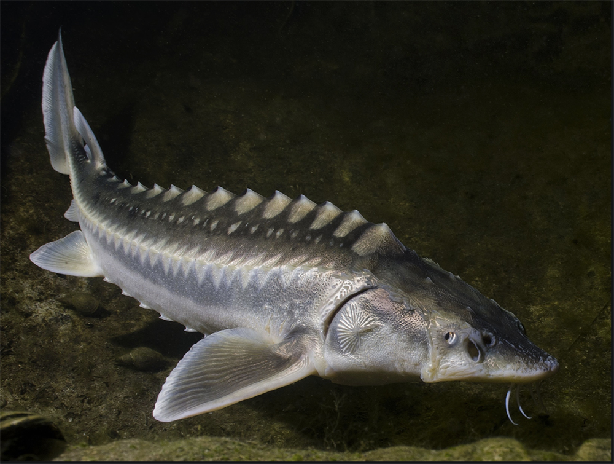

O esturjão é um peixe grande, maior do que uma pessoa, podendo chegar aos 5,5 metros e 2 toneladas dependendo da espécie. Ele é muito pescado em certas regiões, incluindo mesmo os seus ovos, que são usados no caviar e por isso é um animal ameaçado.
Outros peixes começados pela letra 'E' são a enguia e o espadarte, contudo, não foram eleitos como tema do texto, ao contrário do esturjão.
Isto conclui este texto acerca do esturjão, cuja informação sobre o esturjão é apenas conhecimento geral e nada de novo se aprende, mas é acerca do esturjão, por isso serve. Para finalizar, eis um esturjão.
O esturjão agradece a leitura do texto, que é acerca do esturjão.